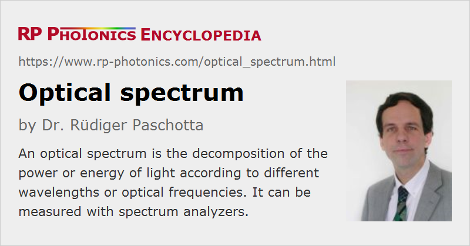

Optical Spectrum
Definition: the decomposition of the power or energy of light according to different wavelengths or optical frequencies
German: optisches Spektrum
Categories: general optics, light detection and characterization, physical foundations
How to cite the article; suggest additional literature
Author: Dr. Rüdiger Paschotta
The optical spectrum (or emission spectrum) of a light source or some beam contains information on how the optical energy or power is distributed over different wavelengths. Usually, it is presented in the form of a diagram where some spectral quantity is plotted as a function of the wavelength or optical frequency. The plotted quantity may e.g. be a spectral flux (in units of W/Hz or W/nm), a spectral intensity (in W sr−1 Hz−1 or W sr−1 nm−1) or spectral radiance (in W sr−1 m−2 Hz−1 or W sr−1 m−2 nm−1), but in many cases optical spectra are presented without an absolute scale. In some cases, one uses a (calibrated or uncalibrated) logarithmic scale, e.g. with units of dBm/nm.
As an example, Figure 1 shows the numerically simulated optical spectrum of a supercontinuum source, which is a highly polychromatic light source. In contrast to that very broad spectrum, the optical spectrum of a single-frequency laser source is often characterized by a very narrow spectral line – in extreme cases, with a linewidth of the order of 1 Hz, corresponding to only ≈ 3 ·10−12 nm (for 1 μm center wavelength). Other lasers have a spectrum consisting of multiple lines, and some (particularly mode-locked lasers for ultrashort pulses) can have a large spectral width of 100 nm or more with a frequency comb structure.

Optical spectra can be recorded with different types of spectrometers (e.g. spectrographs), which greatly differ in terms of the covered spectral range and the spectral resolution.
The optical spectrum is intimately related to the temporal coherence properties of the light. For example, the temporal coherence function fully determines the spectrum. The optical spectrum is also related to the Fourier transform of the electric field (although the latter is in most cases not directly accessible). Therefore, it is also called the Fourier spectrum of the optical field.
Optical Bandwidth
The optical bandwidth is essentially the width of the optical spectrum. There are different definitions, but the full width at half maximum (FWHM) is often used.
Optical Spectra with Line Structures
Some optical sources such as incandescent lamps, light-emitting diodes or superluminescent sources have a very smooth optical spectrum. However, other sources can have spectra consisting of closely spaced narrow lines, which can be resolved only with a spectrometer having a sufficiently high spectral resolution (small resolution bandwidth). In case of a continuous-wave laser with multimode emission, but only on fundamental resonator modes, the lines in the spectrum are approximately (but not precisely) equidistant, with a spacing which typically corresponds to the inverse resonator round-trip time and is in the megahertz or gigahertz region. (The round-trip time can be frequency-dependent due to chromatic dispersion, and nonlinearities may also affect the mode frequencies.) If the laser also emits on higher-order transverse modes, there are additional intermediate lines (related to the Gouy phase shift), so that the line spectrum is denser and not equidistant. Any mode-locked laser, however, produces a frequency comb spectrum with exactly equidistant lines, apart from some laser noise, which is often very weak.
Measuring Optical Spectra
Optical spectra can be recorded with instruments which are called optical spectrum analyzers. They are often a kind of spectrographs, but there are other kinds of spectrum analyzers based on completely different operation principles. For example, there are interferometric devices, using either Michelson interferometers (→ Fourier transform spectroscopy) or on Fabry–Pérot interferometers.
It is also possible to combine spectral analysis with imaging – see the articles on multispectral imaging and hyperspectral imaging.
Questions and Comments from Users
Here you can submit questions and comments. As far as they get accepted by the author, they will appear above this paragraph together with the author’s answer. The author will decide on acceptance based on certain criteria. Essentially, the issue must be of sufficiently broad interest.
Please do not enter personal data here; we would otherwise delete it soon. (See also our privacy declaration.) If you wish to receive personal feedback or consultancy from the author, please contact him e.g. via e-mail.
By submitting the information, you give your consent to the potential publication of your inputs on our website according to our rules. (If you later retract your consent, we will delete those inputs.) As your inputs are first reviewed by the author, they may be published with some delay.
Bibliography
| [1] | Spotlight article of 2007-10-11: "Understanding Fourier Spectra" |
See also: optical spectrum analyzers, optical frequency, wavelength, spectral quantities, power spectral density, spectral phase, bandwidth, spectrometers, spectrographs, frequency combs, Fourier transform spectroscopy
and other articles in the categories general optics, light detection and characterization, physical foundations
|  |
If you like this page, please share the link with your friends and colleagues, e.g. via social media:
These sharing buttons are implemented in a privacy-friendly way!